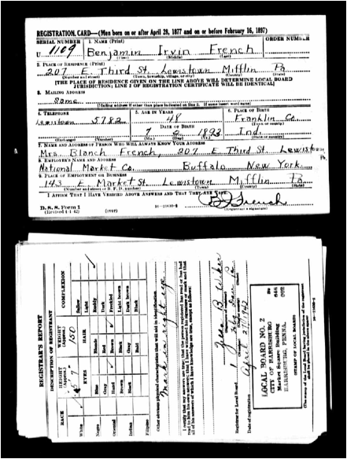
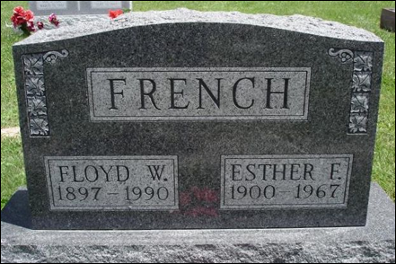

French Family Association
The Official Website of the Surname French

Sheridan, Sheridan Co., Wyoming, 1909
Chart #202, James French, 1831
New York to Ohio to
Salt Creek and Stipps Hill, Franklin Co., Indiana
Sheridan, Sheridan Co., Wyoming
This chart updated by Mara French on 9/27/11. Numbers in brackets [ ] show sources and refer to the bibliography at the end of this chart. An asterisk (*) shows continuation of that line. Send any corrections or additions to this chart to marafrench@mindspring.com. Revisions: 2011.
NOTE: This is only the first draft of this chart. Please make any corrections or additions to this chart – although this is not my family, I will be updating it from time to time. Refer to this chart by chart number. Refer to each family member by their number. Additions are greatly appreciated. You will be notified of the next revision.
Contents
Who Were the Siblings or Uncles of James?
Division of Land in Early Ohio
More Background Research on James French
Close Ties with another French Family in the area – Tilden French of Ohio
Search for Test 7368 after clicking DNA Test above. Administered by Julia French Wood. For any questions regarding DNA, please email Julia at juliaFWood@aol.com.
Foreword
Ive researched this line just about all I can from ancestry.com and from the internet. Additions need to come from family members or from local books or historians who havent put their information online.
P.S. Although James French is not of my line, I will continue to do research on him as time permits. My line is FFA Chart #6.
History and Background
James French was born in 1831. His father was born in New York, perhaps ca. 1810, and his mother was born in Vermont according to the 1880 census of James French of Salt Creek, Franklin Co., IN, when James was 52 (actually 49), – this is the best clue we have had so far for finding his ancestry further back.
OHIO: Counties were the French family resided in Ohio: We have this yet to figure out, but right next to Franklin County, Indiana, is Preble County (where James French met and married Julia Brown and where the Brown family lived) in Ohio.
INDIANA: Counties where this French family resided in Indiana: Franklin, Decatur, Champaign, Cowley, Shelby, Boone, Madison, and Putnam. Below is a map of Salt Creek, Franklin Co., of land ownership between 1860-1918. James B. French owned land in 1882 listed under J B French, 80 acres, with the river running right through the middle, in the Buena Vista area (see arrow).
The French Lick Township is found in Greensburg and named after the French country, not the surname. It got its name from an early French outpost in the area and the nearby salt lick – the town has rich mineral springs.
Who Was James Frenchs Father?
If you know the answer to this puzzle, please email me at marafrench@mindspring.com. Here are all my attempts at finding James Frenchs father: More research to no avail.
What We Know Already
James French was born in Ohio in 1831; therefore, both parents were probably there at that time unless his father died prematurely or his mother died during childbirth; therefore, they could be in the 1830 census. In the 1880 census, James states that his father was born in New York and his mother in Vermont (these places sometimes changed radically). His dad could have been of any age, but his mother was probably aged 15-40 in 1831; therefore, born between 1792-1815. His father could have been born between 1780-1810. There could have been another marriage involved, or several siblings of James could have been born in NY or VT.
It could be likely that James French named his children after his siblings or parents; however, it does not seem as though these names were used previously:
Second Generation
Willard Henry French
Mary J. French
Charles B. French
James E. French
Elmer French
Henry M. French
Maggie Z. French
Tilden Ora French
Sylvester French
Carrie Viola French
Cora Jane French
We do not know what his middle initial B stands for. None of his children have a name that begins with a B. James third son was named after him; so perhaps his third daughter was named after his mother, in this case that would have been Carrie Viola French.
Third Generation Names
Minnie May French
Rosella French
Lucy Olive French
Mary French
William Edward French
Cassius Clarence French
Jesse George French
Johnnie French
Iva French
Pearl French
Benjamin Irwin French
Lela French
Floyd William French
Gerald Dan French
Mabel French
Claude Ernest French
Nellie French
Evangline French
Francis French
Julia Hazel French
Lloyd R. French
Searching Ohio and Indiana
All of James descendants from this line who lived in Franklin County, Indiana, are listed below; and his father is not one of them, indicating that he most likely never lived in Franklin Co., IN, but perhaps remained in Ohio where many Frenches lived during that time. James B. French was the oldest French in Indiana. In 1852 at the age of 21, James married in Indiana, in Posey just north of where he lived in Salt Creek. One would think that any siblings or parents would be in the 1830 or 1840 or 1850 census of Ohio or Indiana, but it has not been that easy to find anyone.
1. First Id look at the 1830 Ohio census, the year before James was born. There are 100 men/women named French living in Ohio in the 1830 census. We have no idea where in Ohio James was born. Looking at likely names for his father, most likely is Ora B. French, b. 1801 in NY, lived in Porter, Porter Co., IN in 1880, a widower, living with daughter Wealthy M. French, b. 1831 in OH, daughter Sylvia French, b. 1832 in OH, Susan L. French b. 1849 in IN. In the 1870 census of Porter Co., IN, Ora B. Frenchs wife is living, her name is Abby, b. 1810 in NY. They had children Wealthy, Sylvia, Alpheus, Solon, Lydia, Hannah, Mary, Susan, and Eliza – no mention of a James, who would have been the oldest. See Ref. [10].
2. Id then search for a male French who was born in New York between 1770 and 1815, and lived in Ohio in the 1830 census. There are 19, all of which Ive checked with no clear answer.
Peter French, b. 1774 in NY, in 1850 lived in Mentor, Lake Co., OH
John French, b. 1779 in NY, in 1850 lived in McArthur, Logan Co., OH
Thomas B. French, b. 1785 in NY, in 1850 lived in Truro, Franklin Co., OH
Benjamin French, b. 1786 in NY, in 1850 lived in Springfield, Lucas Co., OH
Frank M. French, b. 1805 in Nassau, NY, in 1870 lived in Cincinnati, Hamilton Co., OH
Thomas French, b. 1805 in NY, in 1870 lived in Pike, Fulton Co., OH
John French, b. 1795 in NY, in 1860 lived in Adams, Champaign Co., OH. Champaign is the county where Julia Ann Browns family came from, and James definitely knew her then because they were married in 1852. In 1830 John lived in German, Clark Co., OH with a family of 5. In 1840 John lived in German, Clark Co., OH with a family of 7. In the 1870 census he lived in Green, Shelby Co., OH. This is FFA Chart #5.
Sampson French, b. 1796 in NY, in 1860 lived in Washington, Morrow Co., OH
Solomon R. French, b. 1797 in NY, in 1860 lived in Bloom, Seneca Co., OH
Wareham French, b. 1809 in NY, in 1860 lived in Orwell, Ashtabula Co., OH
Echamrak French, b. 1793 in NY, in 1850 lived in McKean, Licking Co., OH
John French, b. 1795 in NY, in 1850 lived in German, Clark Co., OH. This is FFA Chart #5.
Samson French, b. 1796 in NY, in 1850 lived in Washington, Morrow Co., OH
Truman B. French, b. 1804 in NY, in 1850 lived in Johnstown, Licking Co., OH
David French, b. 1807 in NY, in 1850 lived in McArthur, Logan Co., OH
Charles M. French, b. 1807 in NY, m. Zelia A., in 1880 lived in Akron, Summit Co., OH
Collins French, b. 1809 in NY, in 1870 and 1880 lived in Rockport, Cuyahoga Co., OH, FFA Chart #9
Noah French, b. 1810 in NY, in 1850 lived in Crane, Wyandot Co., OH
3. Id check for the surname Tilden in early Ohio with the thought that James parents met in Ohio and her surname was Tilden.
In Hiram township, Portage Co., OH, between 1830-1839 was a Colonel Tilden who was one of the original settlers. The following map is of Hiram township in 1832. In 1840, Isaac and Zara French owned land in Hiram, Portage Co., OH; however, Isaac and Zara were both purportedly from MA in 1810, not NY.
See http://www.sidneyrigdon.com/books/1857_Hiram.htm.
Tilden R. French appears as the executor with Martha A. Collier, concerning the will of Henry S. Collier, 11/30/1887 in Hamilton County, Box 68, Case No. 32717, with the beneficiaries Sidney Collier, Edward Steel, and Martha A. Collier (probably the wife of Henry S. Collier) – from the wills of Hamilton Co., OH. Hamilton County, Ohio, is a likely area for James French as a John French was born there on 30 Oct 1832. There is also a James French in Crosby, Hamilton Co., OH, who could have been the father of James French. See http://www.frenchfamilyassoc.com/FFA/CHARTS/Chart202/indexaRESEARCH.htm.
Daniel S. Tilden, son of Samuel and Hannah (McKinstry) Tilden, was born in, NY Feb. 12, 1826, and is of New England origin. His paternal grandfather was Joseph Tilden and his maternal grandfather was Paul McKinstry. The latter served in the Revolutionary war and died in 1845, being buried in Yorkshire near McKinstry Hollow, so named in his honor. At the age of eighteen Daniel S. Tilden began his mercantile life by traveling on foot form house to house and selling goods. A year later he obtained a horse and cart and established a route over which he traveled six years. In 1851 he settled in Machias as a merchant. From the Town of Machias, Cattaraugus Co., NY. No French was from this area.
Tilden R. French lived in Kingston, Ross County, Ohio between 1830-1832. No other French or Tilden lived in that area at that time.
Was there a Tilden family living in Ohio in 1830 who may have had a daughter who was born ca. 1808 in Vermont, and who married a French? There are countless number of females fitting this description.
FFA Synopsis: More research to no avail. There appears to be no naming convention in this family regarding earlier generations. The first name Tilden is quite unique for this line, but we could find no connection to the other Tilden French who lived in Ohio: See FFA Chart #202. Some of the factual information we have, such as his father born in NY, must be incorrect. Most likely his father died during the Civil War.
Note: Susannah French who was b. 1813 in Ohio and by the 1850 census was living in Sand Creek (not Salt Creek), Decatur Co. (not Franklin Co), IN with her husband Henry French who was b. 1795 in KY. They had 4 children: Gideon S., Martin, Lusetta, and Almira. This line is from FFA Chart #31 and has different DNA test results. For any questions regarding DNA, please email Julia at juliaFWood@aol.com.
Who Were the Siblings or Uncles of James?
All we could go by are redundancy of family names. I picked Sylvester and found a George French who was b. ca. 1797 in an unknown location, but lived in Liberty, Washington Co., OH in the 1850 census. He had a son named Sylvester and a daughter named Mary, 2 names that are in the second generation below. Therefore, perhaps George could be a sibling of James Frenchs father. Searching for other Frenches in later census records from Washington Co., OH, I found Ezra French, b. 1825 in OH, a farmer, but his parents were both born in NJ.
Looking at the Indiana State Library Marriage Database through 1850 for Franklin County uncles or aunts to James, we find (no proof as to who these Frenches are):
Caroline French m. John P. St. John on 27 Jul 1834. John P. St. John was b. ca. 1805 in NY and lived in the 1850 census in Otsego, Otsego Co., NY.
Jonathan French m. Elizabeth Johnson on 4 Aug 1820
Rebecca French m. George B. Holland or Halland on 2 May 1827. She was born in Ohio on 9 Aug 1808. George was b. 26 Jul 1806 in Wellsburg, Brooke Co., WV. In the 1850 census, they lived in Greencastle, Putnam Co., IN. The 1880 census for Rebecca Holland state that both her parents were born in Pennsylvania.
First Generation
1.1 James B. French, b. 1 Jul 1831 in OH, calculated from his burial records. James B. French d. 21 Nov 1887 near Stipps Hill, Franklin Co., IN, and was buried at the Stipps Hill Cemetery on 28 Nov 1887. James m. Julia (or Julie) Ann Brown on 22 Dec 1852 in Posey Twp., Franklin Co., IN (this is a verified record). Stipps Hill is a post-office of Franklin Co., Indiana, 12 miles west of Brookville, and in between Andersonville, Buena Vista, and Clarksburg. Franklin County was formed in 1811 and named for Benjamin Franklin. See map above of his property in Salt Creek, Franklin Co., IN, in 1882.
Marriage and the Brown Family
James m. Julia (or Julie) Ann Brown on 22 Dec 1852 in Posey, Franklin Co., IN (this is a verified record). James would have been 21 years old. She was b. 27 Mar 1837 in Preble Co., OH and d. 5 Dec 1892 in Franklin Co., IN, and is buried at the Stipps Hill Cemetery in Franklin Co., IN. In 1850 Julia was living in Posey, Franklin Co., IN, age 13 and married 2 years later.
Julia was the daughter of Henderson Smiley Brown (b. 17 Nov 1806 in Wayne Co., Kentucky, d. 11 Feb 1888 in Franklin Co., IN) and Mary V. Brown (b. 26 Jan 1811 in NJ, d. 2 Aug 1895 in Franklin Co., IN). Already we can see an error here, as the 1880 census of Salt Creek, Franklin Co., IN, states that Julia was born in Ohio, her father in Kentucky, and her mother in Ohio. But we can see that both her parents followed their daughter Julia and James French to Franklin Co., IN.
Henderson and Mary V. Brown married on 21 Dec 1829 in Preble Co., OH. Henderson Brown lived in the 1880 census in Salt Creek, Franklin Co., IN. They lived in 1830 in Union, Champaign Co., OH and in 1840 in Franklin Co., IN. Julia was b. on 27 Mar 1837 in Preble Co., OH (on the border of Indiana) according to the 1880 census, d. 5 Dec 1892 and is buried at the Stipps Hill Cemetery in Franklin Co., IN, age 54y, 8m, 11d.
The 1870 census for Johnson Twp., Champaign Co., OH, shows Julia Ann Brown living with Andrew and Alice Brown. It further states that she was b. 3 Jun 1834 in Montgomery Co., OH, d. 26 Feb 1911 in St. Paris, OH, and m1. John W. Jones, m2. Columbus C. Fuller. This indicates that this Julia is the incorrect line, but should be watched so as not to combine it with the Julia who married James French.
Because James and Julia didnt name their children Henderson or Mary after her side of the family, perhaps James named his first son, Willard, after his father.
Henderson S. Brown and Mary V. Brown had the following 6 children:
Alice Jane Brown, b. 13 Nov 1830 in OH, d. 28 Sep 1851
in Franklin Co., IN (age 20y 10mo 13da)
Davidson Brown, b. 1832, d. 1836.
Benjamin Mahlon Brown, b. 1834, d. 1910 in Huron,
Atchison Co., KS
Julia Ann Brown, b. 1837, d. 5 Dec 1892
Clayton Townsend Brown, b. 1840 in OH, d. 8 Dec 1904 in Franklin Co., IN, m.
Louisa J. Pruit/Pruet on 28 Feb 1866 in Franklin Co.,
IN.
Matilda Brown, b. and d. in 1841.

Census Records for James B. French
Ohio Census.
In 1790, Ohio was still in what was known as Northwest Territory. 1790 census
enumerators did not enter this hostile territory to take the census so there is
not a 1790 Federal census for the area that was to become Ohio Territory
in 1799. 1800 & 1810 Federal censuses were taken
in Ohio but the only surviving fragments are for Washington County, OH. What exists
of these early Ohio census records are included in the
1790-1890 Ohio Census Collection at Ancestry. Census
records are available in Ohio from 1820 onwards, except for 1890
which were destroyed by a fire.
1840 Census – James would have been 9 years old living with his parents. Only head of households are listed.
1850 Census –Because he got married in 1852 in Indiana, he must have been in either in Ohio or Indiana in 1850. There are 5 men named James French in OH in 1850 and no French living in Indiana who was born in OH ca. 1831. Do not let Sand Creek confuse you with Salt Creek; that line is FFA Chart #31 and has different DNA test results. I examined the original records of the 1850 census of Salt Creek, Franklin Co., IN (26 pages), and found no French. At this time, there were 143 dwellings in Salt Creek and 807 inhabitants. For any questions regarding DNA, please email Julia at juliaFWood@aol.com.
In the 1850 census, there are 37 men with the surname French who were born in New York and living in Ohio. Of those men born before 1815 in New York, there are only 13. Of these 13 men, none of their wives were born in VT as stated by James in the 1880 census. Searching for women with the surname French who were born in Vermont and living in Ohio in the 1850 census, there are 15, and only 10 who were born before 1815 when she would have been old enough to have James in 1831, and none of their husbands were born in New York.
1860 Census --James B. French 28 years old, born in Ohio, living in Salt Creek, Decatur County, Indiana. Engineer. He was living with Julia A. French, his wife, and children Willard H., Mary J., and Charles B. He was therefore born in 1832.
1870 Census – James cannot be found. James father may have died at that time; a J. R. French died 22 Feb 1865 and Willis French died 23 Apr 1865 during the War and are buried at the Camp Chase Cemetery in Columbus, Franklin Co., OH. Willis was a Private during the Civil War with the Infantry Confederate States and his unit was the 38th Alabama Infantry, Company F, of Alabama, so perhaps he wasnt part of this family at all. He was probably the one who m. Sukey Fuller and had son Ezra Willis French; his parents were Captain Ezra French, b. 5 Jul 1790, m. Jane Titus, d. 7 Feb 1863. After further research, this family is from Attleboro, MA and Rehoboth, MA, the line of FFA Chart #1. It could also have been very difficult taking a census after the Civil War, and therefore James family was not counted. There was a J. B. French on the Confederate side enlisting in 1861 and in 1864, but we have no further information.
1880 Census --James was 49 years old living in Salt Creek, Franklin Co., IN. James was a farmer, married to Julie, and living with 7 of their children: James, Elmer, Chester, Henry, Maggie, Sylvester, and Carrie. James lists his father as born in New York and his mother was born in Vermont.
James cannot be found in the 1850 nor 1870 census records on ancestry.com. Because he got married in 1852, he must have been in either in Ohio or Indiana in 1850, and by 1870, he must have been in Indiana. On family.search, Salt Creek shows 32 pages of inhabitants on the census taken 6 Aug 1870. No French whatsoever is listed. Perhaps his father died during that time and the family was with him.
A James French is listed as registering for the U.S. Civil War Draft in 1863 as born in Ohio in 1831 and living in Richmond, Ohio in 1863, but we know he lived in Indiana by 1863 and remained there until his death, so this is not the correct James French.
Death
James B. French d. 21 Nov 1887 near Stipps Hill (Buena Vista – in the township of Posey), Franklin Co., IN, and was buried at the Stipps Hill Cemetery on 28 Nov 1887. His gravestone sits alongside his wife Julia and son Tilden and his wife Bertha, and another son Chester I. French. His son Henry signed an application for a pension for Henrys mother Julia on 26 Dec 1887, just a month after his father had died. The inscription on James stone says 56y 4m 20d, Gone but not forgotten. From 21 Nov 1887, this calculates his birth at 1 Jul 1831. I used this calculation: http://www.timeanddate.com/date/duration.html.
Battle of Buena Vista in 1847
Buena Vista was named in 1847. MG Nathan Kimball mentions General Frenchs Division in Indiana during the Battle of Buena Vista in 1847. Could General French have been the father of James? On another website concerning the Mexican-American War at the Battle of Buena Vista, Lieutenant Samuel French is mentioned. He was an artillery specialist who had been shot in the thigh with a musket ball, but survived the war. Because Samuel French graduated from West Point, NY, he may not be the one we are looking for; but he would have been 16 years old at that time. They may be referring to General Samuel G. French. Also mentioned is William H. French, first lieutenant for the First Regiment of Artillery. From The Training Ground: Grant, Lee, Sherman, and Davis in the Mexican War, 1846 by Martin Dugard:
Note that General Samuel G. French mentioned above is from FFA Chart #20, b. 1818, d. 1910.
More Records
Pension File No. 31405/24926 1832 Ohio French Julia A. 365338/240475 also 570926/401475
James B. French is listed on the Salt Creek, Franklin Co., IN, of 1882 in an atlas of land owner index in section 1, page 67. Julia Brown is also listed in section 11, page 67. No other Frenches are listed in Salt Creek. A F. M. French is listed in nearby Laurel, Franklin Co., IN. A Samuel and Mariah French and their children Samuel and Francis are also listed in Laurel; however, Samuels parents were born in NJ and IN.
James resided in Salt Creek, Indiana, in 1863 on a document of the counties of Dearborn, Decatur, Franklin, Ohio, Ripley, and Rush in Indiana. He was age 31 by 1 Jul 1863, therefore born in 1832, married, a laborer, having had former military experience with the 18th Military Regiment for 8 months and was discharged because of disability.
James B French Claimed Residence in Franklin County IN, Enlisted as a Private, served the state of Indiana, joined the IN "F" Co. 18th Inf (Enlisted) on 8/16/1861 at the age of 30.
James B French enlisted as a Corporal, served the state of Indiana, joined the IN "F" Co. 146th Inf (Enlisted) on 2/9/1865. Mustered out on 6/6/1865.
Sources used by HDs at CivilWarData.com. Report by Adjutant General of the State of Indiana.
James B. French served in the American Civil War, Indiana Enlisted F Co. 18th Inf. Regiment in Indianapolis, IN 1 6 Aug 1861 Private. Also listed on the 15th day of July 1861 to serve three years.
Dont confuse the records of James Burgess French from FFA Chart #36. James Burgess Frenchs DNA is from DNA Test Group 1 and not the same as the James B. French of this website.
Second Generation
Children of James B. and Julia Ann (Brown) French, 1.1
These 12 children were born between 1853 and 1879, a 26-year period.
Where is Salt Creek in Indiana? Decatur and Franklin counties are side-by-side, and the township of Salt Creek is half in Decatur and half in Franklin County. Salt Creek Twp. in Decatur County is just south of Lake Santee, and Salt Creek Twp. in Franklin County is just east of Lake Santee. Lake Santee is actually in Decatur County itself. Apparently there is also a Salt Creek Twp. in Jackson County, Indiana.
The 1860 census of Salt Creek, Decatur Co., IN (below), shows the first 3 children of James and Julia. It states that James was 28 and b. ca. 1832 in Ohio.
The print is so poor that you cannot read it, but Ancestry.com lists:
James B. Frentch age 28, b.
ca. 1832 in OH
Julia A. Frentch, age 23, b. ca. 1837 in OH
Willard H. French, age 7, b. ca. 1853 in IN
Mary J. Frentch, age 4, b. 1856 in IN
?? B. Frentch, age 1, b. ca. 1859 in Ohio. This last
entry is probably Charles B. The next child is James, shown on the 1880 census below.
The 1880 census of Salt Creek, Franklin Co., IN (below) at a time when the youngest children were living at home. It states here that James was 52, but he was actually 49. The Salt Creek in Franklin Co. shows nearby places: Lake Santee, Stipps Hill, Clarksburg, Mechanicsburg, Smiths Crossing, Oldenburg, Enochsburg, Batesville, Midway, Andersonville, and Greensburg.
Birthplace Fathers Birthplace Mothers Birthplace
2.1* Willard Henry French, b. 6 Jun 1853 in Buena Vista, Franklin Co., IN, m. Julia Bell Hanway on 8 Nov 1874 in Decatur Co., IN, the daughter of Benjamin Franklin Hanway (1798-1890) and Mary Lewis Hanway (1820-1873). In Ord Precinct, Valley Co., Nebraska, Willard was a farmer. He d. in Nebraska between 1896 and 1899, and Julia was a widow in the 1900 census. Julia was b. 3 May 1854 in Fugit (or New Point), Decatur Co., IN, d. 30 Aug 1941 in Sheridan, Sheridan Co., WY. Willard was the great-grandfather of Jeff French who did the research on this line.
In the 1860 census, Willard was 7 years old and living with his family at Rossburg and Smiths Crossing, Salt Creek, Decatur Co., IN.
In the 1870 census, Julia Hanway was 15, b. ca. 1855 in IN, living in Fugit, Decatur Co., IN with her father and siblings.
In the 1880 census, he was 26 and lived in Jamestown, Boone Co., IN; whereas his younger siblings and parents were living in Salt Creek, Franklin Co., IN. The census states that his father was born in Ohio and his mother in Indiana. On the census record of 1 Mar 1885, Willard lived in Windsor, Cowley Co., IN, was married to J. B. French of the same age, and lived with their 4 children, or perhaps it was 6. Willard was a laborer.
Willard disappeared sometime between 1885 and 1909, and was later declared legally dead. Julia m2. Lon (Alonzo) H. Barnfield, before 1910, an Army Veteran of the Indian Wars, and they had a store on or near the Tongue River Indian Reservation at Birney, Montana, just northeast of Sheridan, WY. Alonzo Harvey Barnfield was b. 1861 and d. 1934.
The Barnfield Family
Alonzo H. Barnfield and Julia B. Barnfield show up in the 1930 census of Sheridan, Sheridan Co., WY. The census states that he was b. ca. 1852 in East Deer, Allegheny Co., PA, 78 years old, and that Julia B. was his wife, age 75, b. ca. 1855. It further states that he was 48 at his first marriage and she was 20 at her first marriage, which indicates that she m. Willard Henry French in 1875. She was born in Indiana and both her parents were born in Kentucky. Alonzo and Julia married before 1910, as they are together in the 1910 census of Hot Springs, Fall River Co., SD. In this census is Nathan (Jonathan) Hunt, a son of Julia Barnfield, but not by Alonzo. He was b. 1893 in NY, stating that his mother was Julia, and that he was a step-son to Alonzo. Julia was only married twice, first to Willard H. French, then to Alonzo Barnfield.
Note: A Willard H. French was b. 19 Jan 1922 and d. 7 Mar 1922, buried at the Arlington Cemetery in Arlington, Washington Co., NE, the son of Charles E. French (1872-1940) and Naomi L. French (1881-1968).
2.2 Mary J. French, b. 25 Aug 1856 in Franklin Co., IN. In the 1860 census, Mary J. was 4 years old and living with her family at Rossburg and Smiths Crossing, Salt Creek, Decatur Co., IN. She d. 19 Feb 1877 at age 21.
2.3* Charles B. French, b. Aug 1858 in Franklin Co., IN. He d. 7 Jan 1948 in Wayne Co., OH, and is buried at the Hopewell Cemetery in Richland, Rush Co., IN (see photo below). Another source says he was buried at the Wayne County Home Cemetery in Wooster, Wayne Co., OH. Both of these cemeteries have his information identical, so perhaps his plot was moved. In the 1860 census, Charles was 1 year old and living with his family at Rossburg and Smiths Crossing, Salt Creek, Decatur Co., IN. Charles is listed in the 1900 census living with his wife, Caroline, in Posey, Franklin Co., IN. He states that his father was born in OH and his mother in IN, which is correct. Charles m. Caroline in 1889. Caroline was b. 1858, d. 1915. They had one son. In the 1910 census of Richland, Rush Co., IN, Charles is living with his wife Caroline and son Jesse G. French.
2.4 James E. French, b. 1861 in Franklin Co., IN. He is listed in the 1880 census of Salt Creek, Franklin Co., IN as a laborer. He d. in 1928 and is buried at the Bethel Hill Cemetery in Lebanon, Boone Co., IN with his wife, Louella or Louellen French (1859-1929). James married at age 24 on 24 Aug 1884 as listed on this website.
2.5* Elmer E. French, b. 1865 in Franklin Co., IN. He is listed in the 1880 census of Salt Creek, Franklin Co., IN. In the 1900 census of Anderson, Madison Co., IN, he is living with his wife Malindia Catherine, and 2 children, Johnnie R, age 12, and Iva M., age 10. He states his father was born in Ohio and his mother in Indiana. In the 1910 census of Anderson, Madison Co., IN, Elmer is living with his wife and states that both his parents were born in Indiana. In the 1920 census in Anderson, Elmer must have m2. Catherine. He states his father was born in Ohio and his mother in Indiana. In the 1930 census, Elmer is still in Anderson with his wife. On the Posey County, Indiana, Query Forum, he lists he was 22 when he married on 21 Oct 1886 in Posey, Indiana, and that his father was James E and mother Julia Brown. The middle initial E for James is new to us; we always thought it was B. However, Elmers father is also listed on this website.
2.6* Chester I. French, b. Feb 1867 in Franklin Co., IN. He is listed in the 1880 census of Salt Creek, Franklin Co., IN. He is listed in the 1900 census in Herman, Washington Co., NB with wife Catherine Groddy whom he married in 1887. They are living with 5 of their children: Pearl, Benjamin, Lela, Floyd, and Gerald. Chester d. 5 Sep 1915 in Rushville, Rush Co., IN, and is buried at the east Hill Cemetery. Chester married at age 20 on 19 Sep 1886 in Posey, IN, as listed on this website.
See: http://www.findagrave.com/cgi-bin/fg.cgi?page=gr&GRid=37819393
OBITUARY, The Daily Republican, Rushville, IN, Monday, September 6, 1915:
C. I. French Dies of Heart Trouble
Rushville Man Expires at His Home Here Sunday After Long Period of Illness
Widow and 5 Children Left
Chester I. French, 48 years old, died Sunday morning at his home in East Seventh street, after a several months' illness from heart disease. Mr. French was well known, having lived here for many years. He had been in a critical condition for the past few weeks and his death was not unexpected. He was a member of the Odd Fellows lodge.
Mr. French is survived by his widow and five children. The children are Mrs. Chase Floyd of Piqua, Ohio, Mrs. Charles Moore of near New Salem, and Ben, Floyd and Gerald at home. The funeral services will be conducted Tuesday afternoon at two o'clock at the late residence and burial will take place in East Hill cemetery.
OBITUARY, Rushville [IN] Republican, Wednesday, February 18, 1853:
Woman Dies At Daughter's Home
Mrs. Katherine French, 85, died Tuesday night at 8:45 o'clock at the home of her daughter, Mrs. Charles Moore, nine miles north of this city. She had been in ill health for the past two years and her residence was at 434 East Seventh Street.
A native of Franklin County, she had resided in Rushville for 50 years. She was born June 24, 1867, a daughter of John and Sarah A. Ross Croddy. Her husband, Chester French, died in 1915.
Besides the daughter, survivors are three sons, Floyd W. French of Rushville, B. I. French of St. Petersburg, Fla., and G. D. French of Long Island, N.Y.; three sisters, Mrs. Ellen Smith of Anderson, Mrs. Mary E. Seniour of Brookville and Mrs. Anna Clark of Andersonville; three grandsons and three great-grandsons.
Funeral services will be held in Moster Mortuary Friday afternoon at 2 o'clock with the Rev. C. M. Estes officiating. Burial will be in East Hill Cemetery. Friends may call at the mortuary beginning Thursday afternoon at 2 o'clock.
OBITUARY, Brookville [IN] Democrat, Thursday, February 26, 1953:
Mrs. Katherine French, 85 years old, Rushville, died last Tuesday at the home of her daughter, Mrs. Charles Moore, north of Rushville. She had been in ill health for the past two years and had left her home in Rushville to live with her daughter.
Born in Franklin County the daughter of John and Sarah Ross Croddy, she spent the earlier part of her life in that community. She was the widow of Chester French, residing in the past fifty years in Rushville and a member of the Christian Church at Buena Vista.
She is survived by a daughter, Mrs. Charles Moore of north of Rushville; three sons, B. I. French of St. Petersburg, Fla., Floyd W. of Rushville, and G. D. French of Long Island, N.Y.; three sisters, Mrs. Mary Seniour of Brookville, Mrs. Anna Clark of Andersonville, and Mrs. Ellen Smith of Anderson; three grandsons and three great-grandsons.
Funeral services were held at the Moster Mortuary, Rushville with burial in the Rushville East Hill cemetery.
2.7* Henry M. French, b. 1870 in Franklin Co., IN. He is listed in the 1880 census of Salt Creek, Franklin Co., IN. On 26 Dec 1887 Henry M. French signed as a witness on an application for accrued pension for Julia A French. Henrys father James died by 1887. Henry m. Anna (Mary Ann) Rodgers on 16 Jun 1889 in Franklin Co., IN, and had a child born on 29 Sep 1904 in Franklin Co., IN. In the 1900 census, he was living in Salt Creek, Franklin Co., IN with his wife and 3 children. In the 1910 census, Henry states that his father was born in Ohio and his mother in Pennsylvania, yet in the 1880 census, he states that she was born in Ohio, yet in the 1920 census, he states she was born in Indiana. In 1910, Henry and Mary were living in Salt Creek, Franklin Co., IN with their 5 children. In the 1920 census, Henry is living with his wife and 2 children in Salt Creek, Franklin Co., IN. Henry married at age 21 on 16 Jun 1889 as listed on this website.
 Hopewell Cemetery, Richland, Rush Co.,
IN
Hopewell Cemetery, Richland, Rush Co.,
IN
2.8 Maggie (or Margaret) Z. (or Zula) French, b. 12 Mar 1872 in Franklin Co., IN. She is listed in the 1880 census of Salt Creek, Franklin Co., IN. According to her brother Tildens death certificate in 1937, she was listed as Margaret Wilson of Anderson, IN. She m. Wesley Hayden Wilson (1867-1942) and had 4 children: Chester Irvin Wilson (1893-1970), Grace Wilson (1896-), Sara Wilson (1898-), and Zula Wilson (1900-). Maggie d. 1 Jun 1938 in Anderson, Madison Co., IN, just a year after her brother Tilden had died. In the 1900 census, she was living in Posey Township, Franklin Co., IN, age 28. Maggie married at age 21 in Posey, Indiana, on 5 Mar 1892, the daughter of James French and Julia A. Brown per this website.
2.9* Tilden (Tillie) Ora French, b. 25 Sep 1875 near Stipps Hill, Franklin Co., IN. He m. Bertha I. Simpson who was born in 1877. He does not show in the 1880 census with the rest of his family in Salt Creek, Franklin Co., IN. In the 1900 census of Posey, Franklin Co., IN, he is living with Bertha and 2 of his children: Hazel and Lloyd; he states that his father was born in Ohio and his mother in Indiana. In the 1910 census of Salt Creek, Franklin Co., IN, Tilden is living with Bertha and 3 of his children: Hazel, Lloyd R., and Arnold; he states that both his parents were born in Ohio. In the 1920 census of Posey, Franklin Co., IN, Tilden is living with Bertha and states that both his parents were born in Indiana; however we know that his father was born in Ohio and his mother in Indiana. In the 1930 census of Shelbyville, Shelby Co., IN, Tilden is living with Bertha and his Young in-laws. According to his WWI draft card, he was a blacksmith working for himself in Laurel, Franklin Co., IN. He had blue eyes and black hair. Tilen married at age 22 on 2 Nov 1896 as listed on this website.
On 11 Feb 1893, Tildens older brother Charles B. French was bound to the State of Indiana in the sum of One Thousand ($1000.00) for Seneca L. Scott faithfully discharging his duties as Guardian of the person and property of Tilden French and Cora Jane French minor heirs of James B. French.
OBITUARY, Connersville [IN] News-Examiner, Friday, April 23, 1937:
Tilden French Dies At Shelbyville
Tilden French, 60, of Buena Vista, died Thursday afternoon at the home of a daughter, Mrs. Hazel Young, at Shelbyville. He had been in failing health for some time. Survivors are the widow; the daughter; two sons, Lloyd, of Louisville, Ky., and Arnold of Corydon, Ind.; a brother and sister, Elmer French and Mrs. Margaret Wilson of Anderson; and three grandchildren.
Funeral services will be conducted at 10:30 a.m. Saturday at the Buena Vista Christian church with the Rev. Eugene Lewis of Orange officiating. Burial will be in Stipps Hill cemetery. Friends may call at the home of the daughter in Shelbyville until the cortege leaves for the church.
2.10 Sylvester French, b. 1875 in Franklin Co., IN. He is listed in the 1880 census of Salt Creek, Franklin Co., IN. Sylvester states that both his parents were born in Ohio.
2.11 Carrie Viola French, b. 1878 in Franklin Co., IN. She is listed in the 1880 census of Salt Creek, Franklin Co., IN. She m. Charles Bonnett in 1894. The 1900 census of Danville, Vermilion Co., IL states that Carrie Bonnett is age 22, born Aug 1872 in IN, and that her father was born in Ohio and her mother in Indiana. Another records states that she married Charlie Bennett on 24 May 1894 in Vermilion Co., IL. See: http://sortedbyname.com/pages/f102535.html.
2.12 Cora Jane French, b. 12 Mar 1879 near Stipps Hill, Franklin Co., IN. She is not listed in the 1880 census of Salt Creek, Franklin Co., IN. On 11 Feb 1893, Coras older brother Charles B. French was bound to the State of Indiana in the sum of One Thousand ($1000.00) for Seneca L. Scott faithfully discharging his duties as Guardian of the person and property of Tilden French and Cora Jane French minor heirs of James B. French.
Third Generation
Children of Willard H. and Julia Bell (Hanway) French, 2.1
3.1 Minnie May French, b. 9 Jan 1876 in Greenup, Cumberland Co., IL. On the 1 Mar 1885 Kansas State Census Record of 1855-1925, Minnies birth date is stated as 1876. She was buried at the Bellwood Cemetery in Bellwood, Butler Co., NE. Apparently she never married. In the 1880 census, she lived in Jamestown, Boone Co., IN. Jamestown, by 1849, contained about 30 houses and had a population of 150.
3.2 Rosella French, b. 7 Nov 1877 in Clarksburg, Decatur Co., IN. On the 1 Mar 1885 Kansas State Census Record of 1855-1925, Rosellas birth date is stated as 1878. In the 1880 census, she lived in Jamestown, Boone Co., IN.
3.3 Lucy (Lucey) Olive (Dollie) French, b. 2 Dec 1879 in Jamestown, Boone Co., IN. On the 1 Mar 1885 Kansas State Census Record of 1855-1925, Lucys birth date is stated as 1880. In the 1880 census, she lived in Jamestown, Boone Co., IN.
3.4 Mary (Mollie) L. French, b. 1 Jun 1882 in Jamestown, Boone Co., IN. On the 1 Mar 1885 Kansas State Census Record of 1855-1925, Marys birth date is stated as 1882. She m1. Arthur Grauel, m2. Jasper Smith; however, in the 1910 census of Sheridan, Sheridan Co., WY, she is listed as married to John Gibbons and her youngest brother Cassius is living with them.
3.5 William Edward (Willie) French, 13 Dec 1884 in Burden, Cowley Co., KS. On the 1 Mar 1885 Kansas State Census Record of 1855-1925, Willie was just born. The record at the Sheridan Municipal Cemetery states that he was b. 13 Dec 1886 in Kansas and d. 20 Jan 1919 and is buried at Plot Block 22 Lot 2. Apparently the family didnt stay in Kansas very long, as Cassius was born in Nebraska.
3.6* Cassius Clarence French, b. 7 Apr 1887 in Osceola, Polk Co., Nebraska. He d. 2 Sep 1953 in North Spotted Horse, Campbell Co., Wyoming, at age 66 in a traffic accident and was buried at the Sheridan Municipal Cemetery in Sheridan, Sheridan Co., WY. Cassius was the grandfather of Jeff French who did the research on this line [1]. Cassius never allowed anyone to call him Clarence; therefore, it is very important not to consider the various men named Clarence French who were born near the same time and in a close proximity.
Marriage
Cassius French m. Etta Inez Allman on 14 Jun 1913 in Foster House, Sheridan, Wyoming. She was b. ca. 1891 according to the 1930 census of Lodge Grass, Big Horn Co., Montana. In some census records, she was called Ella.
Foster House Hotel, ca. 1910, near the time of Clarences marriage to Etta.
Census Records
1900 census -- Cassius was adopted by William J. and Maggie M. Scott according to the 1900 census of Logan (or OConnor), Greeley Co., NE, when Cassius was only 12. Both of his natural parents were born in Illinois according to ancestry.com, but I suppose they meant Indiana. His adopted father (William J. Scott) was born Nov 1868 in Ireland and arrived in America in 1887, the year that Cassius was born. Cassius adopted mother and William J. Scotts wife (Maggie M. Scott) was born in May 1874 in Iowa. On the 1900 census it states that Cassius was 13 and born in Apr 1887 in Nebraska.
1910 census -- Looking at the Scott family, they appear in the 1910 census of Cedar, Boone Co., Nebraska, the state in which Cassius was born. William and Maggie Scott were living there with their daughter Mary L. Scott, age 3, born 1907, in the 1910 census. Cassius would have been 22, and he is not listed with the Scott family. Instead Cassius is listed with the Gibbons family as Cash C. French, age 24, b. ca. 1886 in Iowa, but living in 1910 in Sheridan, Sheridan Co., WY, which is definitely where the majority of this family lived, even until today. Here he states that both is parents were born in Indiana. He is single. But who were to Gibbons family? John Gibbons was b. 1878 in Iowa and only 8 years older than Cassius. His wife was Mary L. Gibbons and she was only 4 years older than Cassius, and because she states that both her parents were born in Indiana, she could have been born Mary L. French. Cassius is listed as the brotherin-law, so now we have established a legitimate sister for Cassius.
1920 census -- Cassius lived in Decker, Big Horn Co., Montana in the 1920 census with no wife (perhaps Etta had died) and with his children Arthur (b. 1915 in WY, who states that his father Cassius was born in NE and his mother in Michigan) and Lester (b. ca. 1918 in WY, who states that his father Cassius was born in NE and his mother in Michigan). Also in this census is stated as his daughter, Daisy Ostrom, whom Id imagine was the daughter of his wife by her previous marriage, b. ca. 1909 in Montana, stating that her mother was born in Michigan and her father in Sweden – neither one is part of the French family, but the census definitely states that she was the daughter of the head of household who was Cassius, plus it states that her fathers name was Cassius French. Also in this census is stated Albert Ostrom as Cassius son, b. ca. 1912, with the same names listed for parents as his sister Daisy states.
1930 census -- Cassius was married to Ella and living in Lodge Grass, Big Horn, Montana, b. ca. 1887 in Nebraska. We can see from this census record, that the two children in the 1920 census (Arthur and Lester) are also in this census. Plus one more child is added, Charles, age 9, b. ca. 1921. However, the two Ostrom children are not listed, and they would have been over 18 at that time.
Obituary
Sheridan Press, Thursday, September 3, 1953, page 1
Sheridan Man State's 118th Traffic Death
C.C. French, 65, who resided south of Sheridan on the Buffalo star route, was killed Wednesday afternoon on Highway 14-16 near Spotted Horse when the automobile he was in went out of control and overturned.
Mrs. French, according to reports, is doing well since she sustained only bruises and cuts in the accident. A friend, Mrs. Lora K. Lindsey, 63, of 57 West Second street, Sheridan, was reported this morning as improving from the serious injuries she suffered. Both are patients in the Gillette hospital.
They were in route to Hot Springs, S.D., to visit a sister of Mr. French when the accident occurred.
Although information on the life of Mr. French was unavailable at press time today, it was learned that he had moved to this locality only three or four years ago, and that he had ranched for many years near Lodge Grass, Mont.
Among the survivors in addition to his wife are two sons, Lester, who also resides in Montana, and Arthur, whose residence was unavailable.
The traffic fatality was the 118th of the year for Wyoming. The accident was investigated by Campbell County Sheriff Ted Holdeman, who said he was unable to determine which of the three was driving the car.
Champion's funeral home is in charge of arrangements which are not complete, pending the arrival of the two sons and other relatives of Mr. French.
Etta French owned the plot according to cemetery records.
More Records
Cassius Clarence enlisted for WWI during 1917-1918 in Hardin?, Big Horn Co., Montana. The paper was signed by William French, his employers name in laboring, also his father. This could indicate that he was adopted by the Scott family because his natural mother had died. Clarence was short and had blue eyes and brown hair. It also has the signature of Inez French. Perhaps those were his parents who were both born in Illinois. It states he was b. 7 Apr 1886 instead of 1887. He was a short man with a small build, blue eyes and brown hair.
Records to Not Consider
Theres another Clarence French in the 1920 census of Richland, Story Co., IA living with wife Grace and children Greta and Everett. (This record is not of the family on this website because Cassius rarely used his middle name Clarence).
The 1 Jan 1925 census taken in Iowa lists Clarence French as b. 18 Nov 1885 in NE, married to Stella A., b. 1882. He was living in Nevada Twp., Story Co., Iowa, and his father was Ira French and his mother was Sabina Webbe. (This record is not of the family on this website because Cassius rarely used his middle name Clarence, plus he never lived in Iowa).
The 1930 census of Clarence French of Nevada, Story Co., IA is also not of this line. This line has been confused with the line of this website because this Clarence was also born in Nebraska two years earlier in Nov 1885. He does not have a middle name. His WWI draft card states his birthday as 18 Nov 1885.
Another Clarence French is listed as born 1 Nov 1887, d. Jun 1964 in Kansas.
Child of Charles B. and Caroline French, 2.3
3.7* Jesse George (J. G.) French, b. 9 Sep 1891 in Posey, Franklin Co., IN. In the 1900 census of Posey, Franklin Co., IN, Jesse was 9 years old living with his parents. In the 1910 census of Richland, Rush Co., IN, he was married and living with his wife Pearl. She was b. ca. 1896 in IN. In the 1920 census, they were living in Fugit, Decatur Co., IN. They had one son. Jesse registered for the WWI draft.
Jess G. French d. 1928 and is buried at the Hopewell Cemetery in Richland, Rush Co., IN. His gravestone indicates he was b. in 1889, but he was born in 1891.
Children of Elmer and Malinda Catherine French, 2.5
3.8 Johnnie R. French, b. 31 Dec 1888 in Anderson, Madison Co., IN, living in the 1900 census of Anderson, Madison Co., IN. He enlisted in the WWI draft when his record states that he was married with 1 child.
3.9 Iva M. French, b. Aug 1889 in Anderson, Madison Co., IN, living in the 1900 census of Anderson, Madison Co., IN. By the 1910 census of Anderson, she was married to Richard W. Boze, 11 years her senior, and had 2 sons, William R., and Paul E. Boze.
Children of Chester I. and Catherine (Groddy or Croddy) French, 2.6
3.10 Pearl French, b. May 1889 in Franklin Co., IN, living in Herman, Washington Co., NE, in the 1900 census.
3.11 Benjamin Irwin French, b. 2 Jul 1893 in Franklin Co., IN, living in Herman, Washington Co., NE, in the 1900 census, living later in St. Petersburg, FL, by 1953. He d. Mar 1977 in Westport, Fairfield Co., CT.
His WWI draft card states that he was living in Dayton, Montgomery Co., OH in 1917. His grandfather, James B. French, was from Ohio, and one wonders if Benjamin moved there when he was young to be with relatives.
His WWII draft card states that he was living at 207 E. Third St., Lewistown, Mifflin Co., PA. He was working for National Market Company, 143 E. Market St., in Lewiston, with headquarters in Buffalo, NY.

3.12 Lela French, b. Aug 1895 in Nebraska, living in Herman, Washington Co., NE, in the 1900 census. She m. _____ Moore and outlived her brother Floyd who died in 1990; therefore, living almost 100 years.
3.13 Floyd William French, b. 12 Mar 1897 in Herman, Washington Co., Nebraska, living in Herman, Washington Co., NE, in the 1900 census, later living in Rushville. He enlisted in WWI on 29 Jul 1917 at Fort Thomas, KY. He was in the Army for the 82 Aer Squadron to 13 Sept 1917; 91 Aer Squadron to 6 Oct 1918; 1101 Aer Squadron to 2 March 1919; 5 Pursuit Group AS to 13 March 1919; 138 Aer Squadron to 13 May 1919; 141 Aer Squadron to Discharge Private St Mihiel; Meuse-Argonne. American Expeditionary (from the Ohio Soldiers in WWI). In the 1920 census of Dayton, Montgomery Co., OH, he had returned home after WWI and was living with his parents and his brother Gerald.
Floyd m. Esther Flossie White, b. 4 Apr 1900, she d. 12 Dec 1967. Floyd d. 31 Dec 1990 in Rushville, Rush Co., IN.

OBITUARY, Rushville [IN] Republican, Monday, December 31, 1990:
Floyd William French, 93, 612 E. 11th St., Rushville, died at 2:50 a.m. Monday, Dec. 31, 1990, in Rush Memorial Hospital.
Born March 12, 1897, in Herman, Neb., he was the son of Chester French and Catherine Croddy. He was a veteran of the U.S. Army Aviation and served in World War I. He was a member of the Main Street Christian Church. Retired for many years, he had been previously employed at the following Rushville businesses: Conyers Frozen Foods, Clarkson-Patterson Laundry. He married Esther White, who preceded him in death Dec. 12, 1967.
Survivors include one sister; Mrs. Lela Moore, Mays; one brother, Gerald French, Hollywood, Fla.; and one nephew.
Services are 2 p.m. Wednesday, Jan. 2, at the Moster and Cox Mortuary. Following cremation, burial will be in Clarksburg Cemetery. Visitation is after noon Wednesday at the mortuary.
***
OBITUARY, Rushville [IN] Republican, Wednesday, December 13, 1967:
Esther French Succumbs Here
Mrs. Esther Flossie French, 67, 1220 North Perkins, died at 7:40 p.m. Tuesday in Rush Memorial Hospital, where she was admitted at noon that day, after several years of failing health.
A retired licensed practical nurse, Mrs. French formerly was employed at Rush Memorial Hospital for many years. In her early life she worked in the office of the late Dr. Sexton here.
A Rushville resident for many years, Mrs. French was a member of the Main Street Christian Church.
She was born in Decatur County on April 4, 1900, the daughter of William H. and Jessie Woods White, and was married in July of 1930 to Floyd W. French, who survives.
Surviving with the husband are four brothers, Elmer White, R. R. 4, Rushville, Ralph White near Hope and Ernest White of Greensburg, and a sister, Mrs. Lillian Ray of Greensburg. A twin brother, Ethmer White, preceded her in death.
The Rev. Richard Merriman will conduct services at 2 p.m. Friday at Moster and Sons Mortuary, where friends may call after 3 p.m. Thursday, with burial in the Clarksburg Cemetery.
3.14 Gerald Dan French, b. 14 Nov 1899 in Nebraska, living in Herman, Washington Co., NE, in the 1900 census, later living in Long Island, NY. In the 1920 census of Dayton, Montgomery Co., OH, he had returned home after WWI and was living with his parents and his brother Floyd. By the 1930 census, he was living in Mullen, Hooker Co., NE, with his wife, Esther P. He died on 8 Feb 1998 in Broward Co., Florida, at age 98. In 1990 Gerald was living in Hollywood, Florida according to his brother Floyds obituary.
Children of Henry M. and Anna or Mary Ann (Rodgers) French, 2.7
3.15 Mabel W. French, b. Mar 1891 in Salt Creek, Franklin Co., IN, where she lived with her parents in the 1900 census.
3.16 Claude Ernest French, b. 2 Dec 1893 in Salt Creek, Franklin Co., IN, where she lived with her parents in the 1900 census. In the 1910 census of Salt Creek, he was also living with his family. In the 1920 census, he was living in Connersville, Fayette Co., IN with his wife, Opal, and their newborn daughter Helen L. French. In the 1930 census of Warren, Putnam Co., IN, Claude was 36 and living in inmate housing with many people, and he was the only French.
3.17 Nellie (or Nella) M. French, b. Jun 1899 in Salt Creek, Franklin Co., IN, where she lived with her parents in the 1900 census. In the 1910 census of Salt Creek, she was also living with her family.
3.18 Evangline (or Evangelina) French, b. 1904 in Salt Creek, Franklin Co., IN, where she lived with her parents in the 1910 and 1920 census. She d. 1995 and is buried at the Hopewell Cemetery in Richland, Rush Co., IN, never married.
3.19 France (or Francis) E. French, b. in 1908 in Salt Creek, Franklin Co., IN, where she lived with her parents in the 1910 and 1920 census.
Children of Tilden O. and Bertha I. (Simpson) French, 2.9
3.20 Julia Hazel (known as Hazel) French, b. 14 Apr 1897 in Decatur Co., IN, d. 14 Mar 1961 in Shelby, IN, m. Millard Young (1896-1978) on December 27, 1915, Franklin Co, IN. They had son Marvin E. Young, 1923-1976. Hazel is in the 1900 census of Posey, Franklin Co., IN. Hazel J. French is in the 1910 census of Salt Creek, Franklin Co., IN, with her parents and 2 brothers. Julia and Millard Young had son Marvin Elbert Young on 17 Jan 1923 in Buena Vista, Franklin Co., IN.
OBITUARY, Shelbyville [IN] News, Tuesday, March 14, 1961:
Death Claims Mrs. Young
Rites Thursday For Car Liner Employee, 63
Mrs. Hazel Young, 63, wife of Millard Young of 742 S. West St., died at Major Hospital early this morning. She had been ill with a complication of diseases for the past 13 months but was taken to the hospital only Sunday morning.
Mrs. Young was employed at the Kennedy Car Liner and Bag Company for 15 years before becoming ill. A daughter of Tilden and Bertha French, she was born in Decatur County on April 14, 1897, and had resided here since 1924. She was a member of the First Christian Church.
Surviving with the husband are a son, Marvin E. Young, at home, and two brothers, L. R. French of Underwood, Ind., and Arnold French of Corydon, Harrison Co., IN.
Funeral services will be held at the Murphy Mortuary Thursday at 2:00 p.m. with the Rev. James Horner officiating. Burial will be in the Lewis Creek Baptist Church cemetery. Friends may call at the mortuary after 2:00 p.m. Wednesday.
3.21* Lloyd R. French, b. Aug 1898 in Posey, Franklin Co., IN, lived in Underwood, IN. He is listed in the 1900 census of Posey, Franklin Co., IN living with his parents and sister Hazel. Lloyd is listed in the 1910 census of Salt Creek, Franklin Co., IN. By the 1930 census of Louisville, Jefferson Co., KY, he is married to Nancy E., b. 1901, living with 2 children.
3.22 C. French, b. 1903 in IN, living in Posey, Franklin Co., IN, with his parents in the 1920 census. Arnold is listed in the 1910 census of Salt Creek, Franklin Co., IN.
Fourth Generation
Children of Cassius Clarence and Etta Inez (Allman) French, 3.6
4.1 Cassius Harvey French, 16 Feb 1914 in Kleenburn, Sheridan Co., Wyoming. He is not listed in the 1920 census.
4.2* Arthur Alonzo French, b. 12 Feb 1915 in Monarch, Sheridan Co., Wyoming. The Social Security Death Index states he d. 3 May 1988 at age 72, but another source says he d. 15 Dec 1972 in Billings, Yellowstone Co., MT. He m1. Mildred Mae Mock on 28 Jul 1943, and that marriage ended in divorce. He m2. Delores Hoehne in 1959 in Hardin, Big Horn Co., Montana. Arthur was the father of Jeff French who did the research on this line [1]. He is listed as living with his father in the 1920 and 1930 census records.
4.3 Lester W. French, b. 3 Oct 1917 in Wyoming, enlisted on 30 Jan 1942 as a Private, at which time he was single and without dependents. He d. 7 Nov 1992 at the age of 75 in Columbia Falls, Flathead, Montana. He is listed as living with his father in the 1920 and 1930 census records.
4.4 James Clarence French, b. 23 Dec 1920 in Sheridan, Sheridan, Wyoming, d. 13 Feb 1958 in Shelton, Mason Co., WA (committed suicide) and is buried at the Shelton Memorial Park Cemetery in Mason Co., WA, and is not in the Social Security Death Index. He is listed in the 1930 census living with his parents and brothers Arthur and Lester, but his name is listed as Charles, same birthdate. His mother must have died with this birth as she is not in the 1920 census with her young children and husband Cassius, plus, Cassius did not have more children. James m. Beatrice Berthalee James Copp in Sheridan, WY, and they have at least 3 children.
Children of Jesse G. and Pearl French, 3.7
4.5 Walder French, b. 1914 in Fugit, Decatur Co., IN. He is in the 1920 census of Fugit.
Children of Lloyd R. and Nancy E. French, 3.21
4.6 Erma L. French, b. 1922 in IN, was living in Louisville, Jefferson Co., KY, per the 1930 census.
4.7 Elwin B. French, b. 1925 in IN, was living in Louisville, Jefferson Co., KY, per the 1930 census. Elwin enlisted for WWII on 17 May 1943 as a Private.
Fifth Generation
Children of Arthur Alonzo and Mildred Mae (Mock) French, 4.2
5.1 James Arthur Miles French, b. 1 Feb 1944 in Billings, Yellowstone Co., MT, d. 23 May 1994 in Marysville, Yuba Co., CA. He m1. Hurt and had 4 children, m2. Brown and had 1 child.
5.2 Evelyn Jean French, b. 9 Apr 1946, m1. Kenneth Jay Scott and had 1 child, m2. David Lee Houston and had 1 child, m3. White and had 1 child, m4. Thomas Kaiser and had 1 child, m5. Lyle Massaro and had 1 child, m6. Theodore Thompson and had 1 child.
5.3 Jeffrey Lee French, b. 1948, m. Fitzpatrick, lives in Sheridan, Sheridan Co., WY [1].
5.4 Timothy Allan French, b. 1 Apr 1951 in Sheridan, Sheridan Co., WY, d. 20 Mar 1983 in Sheridan, Sheridan Co., WY, and is buried at the Sheridan Municipal Cemetery, a Corporal in the U.S. Army in Vietnam (the Vietnam War was from 1959 to 1975). He m1. Vialpando and had 1 child, m2. Twiss and had 1 child, m3. Cynthia Ann Cotton Kavka and had 1 child.
5.5 John Harold French, b. after 1951, m1, Krank and had 2 children, m2. Norman and had 2 children.
5.6 Steven Lester French, b. after 1951, m. Taniguchi and had 2 children.
Children of Arthur Alonzo and Delores (Hoehne) French, 4.2
5.7 Marvin Lee French,
5.8 Richard French,
5.9 Raymond French,
5.10 Etta Lynn French,
5.11 Arthur Alonzo French, Jr.,
5.12 Joanna Marlin French,
5.13 Leland French,
Division of Land in Early Ohio
The original Wayne County was established 15 August 1796. This county disappears from Ohio in 1803 when Ohio became a state and ultimately became Wayne County, Michigan.
The present day Wayne County was formed 13 February 1808 and named after Gen. "Mad Anthony" Wayne, who was an outstanding Indian fighter in Ohio. The county seat is Wooster.
On 11 April 1812, the county was divided into four townships: Sugarcreek, Wooster, Mohican, and Prairie. On the 5th of September 1814, East Union and Lake Townships were formed. Four days after Perry's victory on Lake Erie, 14 September 1814, Mohican Township was changed to Perry.
On 15 June 1815, Springfield Township was formed but later disappears as other townships are formed. Chippewa Township was formed 4 September 1815. Baughman, Salt Creek, Chester, and Paint Townships were formed 5 March 1816.
Wayne Township was formed 12 October 1816 with Greene Township following on 5 February 1817; Congress and Milton on 5 October 1818; Jackson Township came into being 1 February 1819 and Canaan 5 May 1819.
With the formation of Plain Township in early 1817, the north half of Springfield Township was wiped out. On 7 June 1820 the township of Franklin was formed. Pike Township was formed in 1817 and was composed of the exact territory, which now constitutes Clinton and eradicated the remaining half of Springfield Township. The last of the present day sixteen townships, Clinton, was formed on 7 June 1825.
DNA Testing
Administered by Julia French Wood. For any questions regarding DNA, please email Julia at juliaFWood@aol.com.
A good source for research would be for a male with the
surname French of this line to take the DNA test. It is a simple test that
doesnt involve blood. A kit is delivered to your house with special brushes
for you to take cheek swabs and the tip is injected into the tiny test tubes to
be returned to the lab. After the tests that you ordered are completed, in
about 4 weeks, you will be notified and can log in to your personal page at the
company to view your results and your DNA matches. They may match up with one
of the tests shown here: http://www.familytreedna.com/public/french/default.aspx?section=yresults.
The FamilyTree DNA website gives a special lower
price to those with the surname French. Read about those who approve of it: http://www.familytreedna.com/testimonials.aspx.
To get the discounted price for our French DNA Project group, go to http://small-stuff.com/FRENCH/DNA/ and click at
the left on "Join the French DNA Project" then place your
order. Julia French Wood suggests the 37 marker
test (Y-DNA37), but if you want to start with 25, you can upgrade to a higher
test at a later date if needed.
Bibliography
[1] Jeff French, http://wc.rootsweb.ancestry.com/cgi-bin/igm.cgi?op=GET&db=allmyresearch&id=I18316, Email: frenchfamily@bresnan.net, 307-672-3301.
[2] Social
Security Death Index for Sheridan, WY
Bert French, b. 18 Jul 1881, d. May 1973
Lloyd French, b. 30 Jul 1905, d. May 1983
Norma K. French, b. 30 Mar 1910, d. 21 Apr 1987
Herbert French, b. 16 Jul 1888, d. Jul 1974
Gladys R. French, b. 2 Feb 1902, d. 6 Jan 1996
Steven L. French, b. 4 Dec 1954, d. 21 Oct 2004
[3] Cary Winright, email: beccarde@gmail.com, not her direct line, but she is working on it and mostly on the Brown family. Email good in 2011.
[4] Research by Mark W. French, website: http://trees.ancestry.com/tree/24160503/person/1481901826, email: mwfrench@nycap.rr.com (good in 2011).
[5] Sussex Family History Group Home Page, http://www.sfhg.org.uk/index.html. There are 1730 Frenches listed in the SFHG Tombstones and Burials: http://www.sfhg.org.uk/mipageF.html
[6] Cassandra Ward, email: cdward@conwaycorp.net (good in 2003, not good in 2011).
[7] Miki French Hobson, email: nhobson@webtv.net (good in 2003).
[8] Ohio Census Records, http://www.censusfinder.com/ohio-census-records10.htm many to look for here
[9] http://files.usgwarchives.org/oh/muskingum/land/musk-d-g.txt, search for French and youll find James B. French, Section Number: 23; Township: 11 N; Range: 13 W; Meridan: Ohio River Survey; Total Acres: 79.23 L_O_Code: Zanesville Document_N: 3187 Sign Date: 1832/04/02. This is a list of the Muskingum County Ohio Bureau of Land Management Database, Surnames D-G. If James B. French were born in 1831, he would not be old enough to be listed on this survey; therefore, I believe his fathers name was the same as his. (this has already proven to be FFA Chart #36)
OHIO RIVER SURVEY - covers most of southeastern Ohio. The base line of the survey followed the meanders of the Ohio River from the Pennsylvania-Ohio state line to the mouth of the Scioto River. Townships were numbered northward from the Ohio River, leading to non-standard locations (i.e., in Muskingum County, Township 15 North, Range 14 West, is due west of Township 11 North, Range 13 West). Includes the Ohio Company Purchase and the Donation Tract, for which there are some records; there are no records about the disposition of the French Grant in Scioto County. Contains duplicate townships (Townships 9, 10, and 11 in Range 21).
The 1850 census of Brush Creek, Muskingum, Ohio show James B. (Burgess) French b. ca. 1789 in Virginia, and his wife Nancy. See: http://search.ancestry.com/cgi-bin/sse.dll?db=1850usfedcenancestry&indiv=try&h=14355337 and http://trees.ancestry.com/tree/445630/person/-2081707516 -- of course this is FFA Chart #36 which is part of DNA Test Group 1.
[10] Porter County, Indiana, 1876 History, website: http://www.inportercounty.org/Data/Misc/PorterCountyHistory-1876.html.
SOLON FRENCH was born in Porter County Ind., April 14, 1838, and is the fourth of nine children composing the family of Ora B and Abigail (Dibble) French; his parents were among the early settlers of Porter County, and here Solon was engaged in farming until the age of twenty-four years, when he afterward settled in Union Township. In December 1863, he was married to Martha E. Atwell, of this county. This marriage was blessed with six children, of whom but two are living, Bertha and Emma. On October 13, 1864, he enlisted in Company D., Seventeenth Indiana Mounted Volunteer Infantry; he served until the end of the war, receiving two wounds in his country's service. He owns a good and attractive farm numbering 140 acres, and is one of the leading farmers of his section. In politics, he is a Republican; he has been Township Trustee, and also Justice of the Peace for four years.
WHY did we live in this County? According to family stories my great grandfather Solon French was the first white baby born in what is known as Porter County? Vidette-Messenger stories state a Bailly to be the first. I do not know which is true. At least, Solon French was one of the first. He was a great man; he built cabinets -- just more or less as a hobby plus for use in their home. He farmed. He was like a lawyer -- many people came to him for legal advise. Then he had a son Burton French who had a son Glenn French who married Ruth Riley, all of Union Township (Solon lived in Valparaiso). On June 4, 1920 Glenn and Ruth French had a daughter Phyllis who went all 12 years to Wheeler School. Ethel Ruth was her first teacher and Miss Ruth had also taught Glenn French. Phyllis graduated from Gary Business College and was secretary for architects, attorney's -- and then met Robert E. Stout from Medaryville and they married. He was in construction work on State Road 30 west of Valparaiso. We married and moved to Union Mills where Robert worked at Kingsbury Ordinance Plant for 1 1/2 years until he was drafted into World War II. We had a daughter shortly after he went to the war -- Roberta Dawn Stout. (Phyllis & Roberta are only children) Robert returned after 3 yrs. Of service and continued in construction business self-employed. Roberta got her grade school at Wheeler and high school at American School in Chicago. She graduated from Famous Artist School in Westport, Connecticut. She is a well-known local artist, a member of Gary Artist League, shows in many local art exhibits, had the feature painting in Gary Artist League show in 1975, shows at Amish Acres in Nappanne, Indiana; Frankfort, Ill. Gay Nineties Festival annually, and has studied under several well-known teachers of art. She has a number of ribbons in her oil paintings, watercolor, and sculpture work. She also does pen and ink, pencil drawings, etc. Stout's live on a very small acreage but live close to the land -- grind some of their own flour and do many of the early American ways. We do our own baking from scratch, composing some of our own recipes and have won recipe contests. We make our own yogurt for example. We do a lot of needlework -- crocheting knitting, rya weaving, sewing, embroidery work, etc. We love the Lord and are associated with Faith Baptist Church. Our daughter Roberta plays piano, organ, accordion, guitar, sings alto and I sing soprano and we love to sing duets in hymns. Roberta has written the music to several new hymns. Robert has retired from construction work but still does the farming and gardening.
[11] History of Pine Township, Porter Co., Indiana, website: http://www.angelfire.com/mi2/miroots/indiana/porter/phchap13_15.html
[12] History of Decatur County, Indiana, and its people, industries, and institutions, by Lewis A. Harding, 1915. The French surname mentioned within are: Apparently there are 2 places named Salt Creek, one in Decatur County; other in Franklin County.
By 1832 in Fugit township, the town of Clarksburg was laid out and became an excellent trading center. French & Martz are listed in 1915.
The Middle Branch Methodist Episcopal Church in Salt Creek was organized in 1867 with 50 charter members, and J. H. French served as pastor.
[13] http://files.usgwarchives.org/oh/muskingum/land/musk-d-g.txt (this has already proven to be FFA Chart #36)
[14] Ohio Tax Records, 1800-1850. There are 63 tax records of men named French 1830 in Ohio. Some of these men have more than one tax record. Website: https://www.familysearch.org/search/records#count=20&query=%2Bsurname%3AFrench~%20%2Bany_year%3A1830-1830~&collection_id=1473259
Names are:
Charles French of Green township, Columbiana Co., OH
James French of Butler township, Columbiana Co., OH
Robert French, same
Thomas French, same
William French, same
Thomas French of Goshen township, Columbiana Co., OH
Robert French, same
Bartilla French, same
Squire B. French of Geneva township, Ashtabula Co., OH
Levi French of Lenox township, Ashtabula Co., OH
Chauncey French, same
Ira French, same
Otho French of Warren township, Belmont Co., OH
Ezra French of Boardman township, Trumbull Co., OH
Alanson French, same
Alanson French, same
Alexander French of Milton township, Trumbull Co., OH
William French, same
John French of Marietta township, Washington Co., OH
Ezekui French of Warren township, Washington Co., OH
Isaac French, same
Israel French of Mount Pleasant township, Jefferson Co., OH
Thomas French of Salem township, Jefferson Co., OH
Tax Records existed in 1830 for only 6 counties: Columbiana, Ashtabula, Belmont, Trumbull, Washington, and Jefferson.
[15] Ohio Census Records from Ohio being a territory in 1799 to statehood in 1803 and beyond, website: http://www.censusfinder.com/ohio-census-records10.htm. The earliest record of a French in Ohio is through the tax records of 1826 in Mount Pleasant township, Jefferson Co., OH, for Israel French. Then in 1827 for Thomas French in Salem township, Jefferson Co., OH. As for census records, Israel appears in the 1820 and 1830 census records for Mount Pleasant, Jefferson Co., OH. Thomas appears in the 1820 census of Salem, Jefferson Co., OH.
[16] http://slrap.com/modules.php?name=Forums&file=viewtopic&t=856&view=next -- bandwidth exceeded on this website, try again later.
[17] Indiana State Library Genealogy Database Marriages through 1850, website: http://208.119.72.68/INMarriages1850/marriages_search.asp